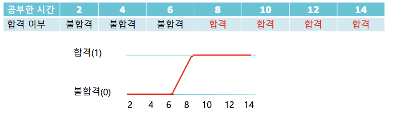
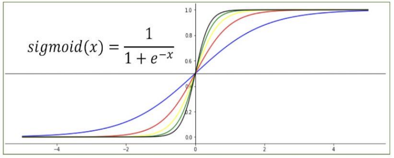
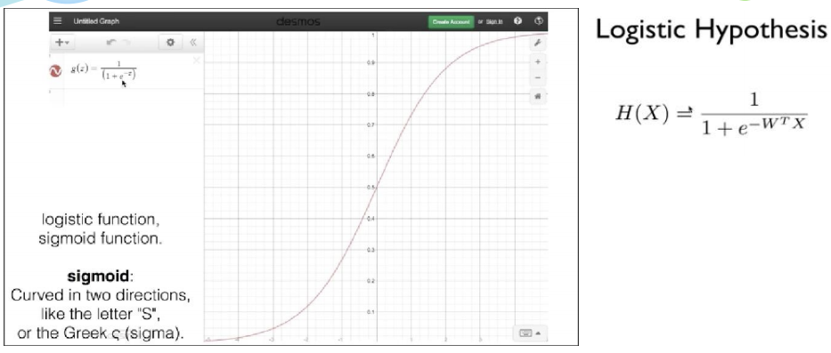
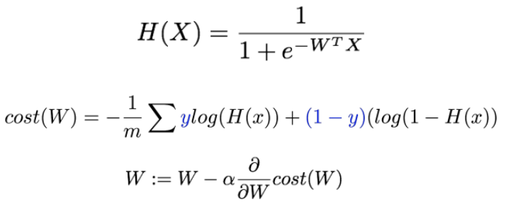
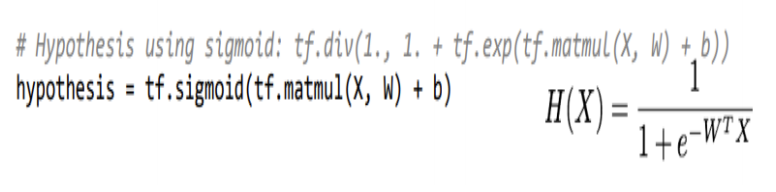
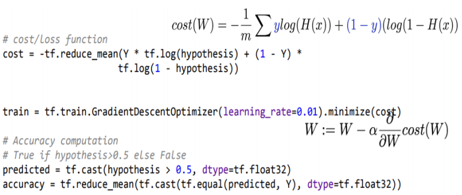
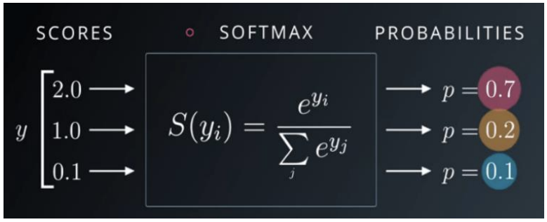
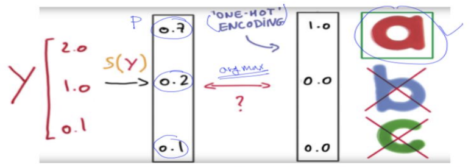
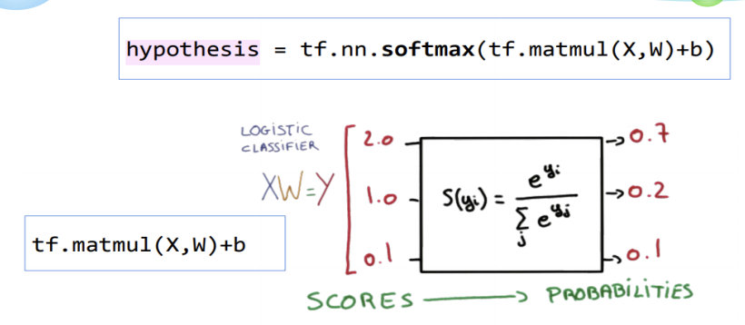

Logistic Regression
- 분류 알고리즘
- Spam Detection : Spam(1) or Ham(0)
- Facebook feed : show(1) or hide(0)
- 학습 시간에 따른 합격 여부 : 합격(1) or 불합격(0)
1. 정의
- 공부한 시간에 따른 합격 여부를 판단하는 경우에는 기존의 linear regrssion을 사용하기 힘든 경우이다. 이런 경우에 Logistic Regression을 사용하면 유용하게 판단할 수 있다.

- 로지스틱 회귀는 선형회귀와 마찬가지로 적절한 선을 그려가는 과정입니다. 다만, 직선이 아니라 참(1)과 거짓(0) 사이를 구분하는 S자 형태의 선을 그어주는 작업입니다.
- 이러한 S자 형태의 그래프를 그려주는 함수가 시그모이드 함수(sigmoid function) 이다.
2. 시그모이드 함수 (sigmoid function)
- Sigmoid 함수는 S와 같은 형태로 미분 가능한 0~1 사이의 값을 반환하기에 Logistic Classification과 같은 분류 문제의 가설과 비용 함수(Cost Function)1에 많이 사용됩니다.


3. Logistic Regression
- 다중 로지스틱 회귀
- 독립변수가 2개 이상인 경우에 사용
- 공부한 시간과 과외받은 시간에 따른 합격여부를 판단하고, 7시간 공부하고 6시간 과외를 받았을 경우에 합격한 확률을 계산한다.
predicted = tf.cast(hypothesis > 0.5, dtype = th.float32)
# tf.csat 는 1 True, 0 False 리턴
# hpothesis > 0.5보다 크면 True, 작으면 False
accuracy = tf.reduce_mean(tf.cast(tf.equal(predicted, Y), dtype=tf.float32))
- Logistic Hypothesis and Cost Function

- Logistic Hypothesis

- Logistic Cost Function

4. SoftMax Function
- 다중적인 분류(Multinomial Classification)를 수행할때 softmax function을 사용하면 데이터를 효율적으로 분류할 수 있다.
합격(1) / 불합격(0) 같은 분류는 sigmoid function을 사용하면 되고, 성적(A,B,C…)과 같이 여러 등급으로 분류를 하기 위해서는 softmax function을 사용하면 된다.
입력데이터는 softmax function을 통해서 확률(probabilities)로 출력되며, 출력된 데이터들의 확률의 합은 1이 된다.

1) ONE-HOT-ENCODING
- 입력된 데이터는 softmax function을 통해서 확률로 처리되는데, 이때 가장 높은 확률의 값을 1로 표시하고, 나머지는 모두 0 으로 표시하는 것을 의미 한다.

